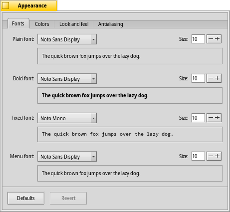
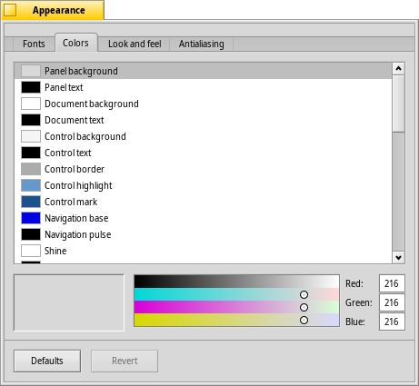
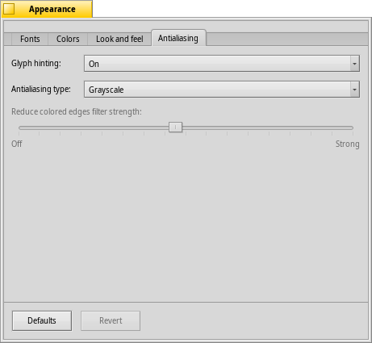

日本語
日本語 Français
Français Deutsch
Deutsch Italiano
Italiano Русский
Русский Español
Español Svenska
Svenska Українська
Українська 中文 ［中文］
中文 ［中文］ Português
Português Suomi
Suomi Slovenčina
Slovenčina English
English 外観 (Appearance)
外観 (Appearance)
| Deskbar メニュー: | ||
| 場所: | /boot/system/preferences/Appearance | |
| 設定ファイル: | ~/config/settings/system/app_server/appearance ~/config/settings/system/app_server/decorator_settings ~/config/settings/system/app_server/fonts |
外観 (Appearance) プリファレンスで、Haiku の外見の一部を変更できます。
 フォント
フォント

Haiku は異なった目的のために 3 種類の標準フォントを定めています。ここでシステム全体で用いられるフォントのスタイル (通常・太字・固定幅) とサイズを設定します。加えて、メニューで使われるフォントの設定が別にあります。
新しいフォントのインストール
新しいフォントは、各自のユーザフォルダーにコピーすることでインストールできます。つまり、/boot/common/data/fonts/ または、/boot/home/config/data/fonts/ です (ファイルシステムレイアウトのトピックをご覧ください)。
色 (Colors)

タブで、ユーザーインターフェースの各部位の色を変更できます。ドラッグアンドドロップによって、ほかのアプリケーションから色を持ってこられるようになっているので、たとえば、WonderBrush、Icon-O-Matic、または背景 パネルなどから色をドラッグできます。
ウインドウデコレーター

デコレーターは、ウィンドウや GUI 要素のルックアンドフィールを決定します。現在、Haiku はただひとつのデフォルトデコレーターだけがついています。ほかのデコレーターを見つけてインストールすることがあれば、ポップアップメニューからべつのデコレーターを選べるでしょう。
アンチエイリアス (Antialiasing)

タブで、画面描画に関するさまざまな設定を行えます。
グリフのヒンティング (Glyph hinting)
を有効にすると、すべての文字の縦方向および横方向両端に、必ず 2 ピクセルの空白が入るようになります。特に、白い背景で黒い文字を扱う場合には、これを有効にしたときとしないときとで、結果は完全に対照的になります。有効にした場合、テキストがはっきりして見えます。ネットブックのような低解像度の機器で特に効果的な、 の設定もあります。ヒンティングをオンにした場合、小さい文字がかなり汚く見えることがありますが、その場合でもテキストエディタやターミナルで ヒンティングの恩恵を受けることができます。
次の拡大したスクリーンショットは、Hinting を有効にした場合と有効にしない場合とで、どれだけ見た目が変わるのかを示しています:
 ヒンティング無効 |  ヒンティング有効 |
このページに掲載されているすべての拡大鏡ウィンドウは、当然のことながらそれぞれ異なるオプションで描画されている点に注意する必要があります。ですので、たとえば、黄色いタブの太文字タイトルや、 "33 x 15 @ 8 pixels/pixel" というテキストを比較することで、各設定が実際に作り出す印象を知ることができます。
アンチエイリアスのタイプ (Antialiasing type)
画面描画を改善するもうひとつの方法は Antialiasing (アンチエイリアス) で、テキストだけでなくすべてのベクタグラフィックをサポートします。アンチエイリアスはあるピクセルの色を変更することにより、線をなめらかにします。線をなめらかにする手法には、次の 2 つがあります:
は、輪郭のピクセルの明るさを変更します。
は、特に (高解像度の) LCD ディスプレイを使用する場合に、グレースケールよりもさらになめらかに描画します。LCD ディスプレイの 1 つのピクセルは、赤、緑、青の要素で構成されているので、この手法では 1 ピクセルの明るさを変更するかわりに、1 ピクセルより小さな分量だけ輪郭を移動させて輪郭の色を変更します。
先ほどと同様に、次の拡大したスクリーンショットは、この 2 つの方法の違いを示しています:
グレースケール、ヒンティング無効 | LCD サブピクセル、ヒンティング無効 |
サブピクセルベースのアンチエイリアスでは、図形オブジェクトにわずかな色味を帯びた輝きが加わります。この余分な輝きを、だれもが許容するわけではありません。Haiku では、この 2 つのアンチエイリアス手法を混ぜて使用できます。スライダーを使って、最適な混合比を設定できます。
仮にソースコードを変更して再コンパイルすることで、ヒンティングと LCD サブピクセルを組み合わせた描画方法を有効にした場合、ヒンティングとグレースケールを組み合わせたものと見た目を比較すると、次のようになります:
グレースケール、ヒンティング有効 | LCD サブピクセル、ヒンティング有効 |
設定パネルの下の部分に、次の 2 つのボタンがあります:
| すべてをデフォルト値にリセットします。 | ||
| 外観プリファレンスを起動したときの設定に戻します。 |